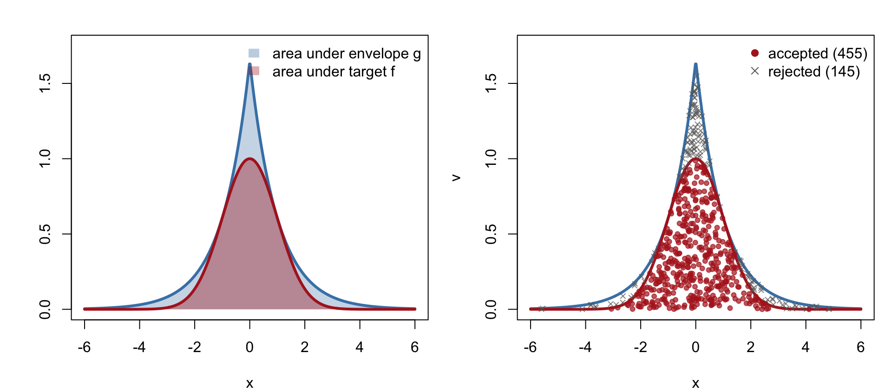
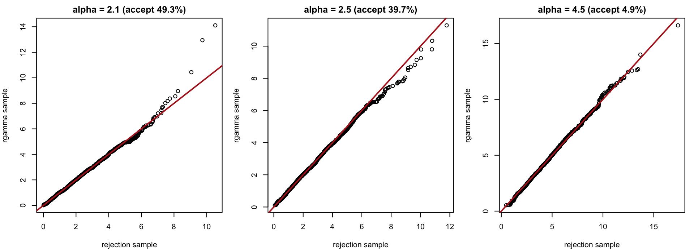
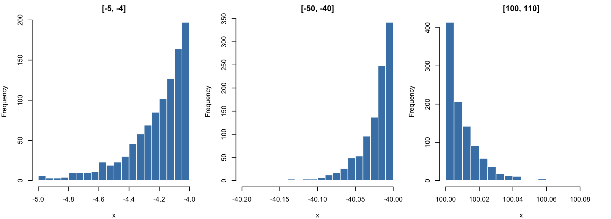

Code
library(ars)library(ars)Monte Carlo integration estimates \(E_f[a(\theta)] = \int a(\theta) f(\theta)\,d\theta\) from iid draws \(\theta_1,\ldots,\theta_n \sim f\). The catch is the sampling step itself: R has built-in samplers for standard families, but a posterior \(f(\theta) \propto L(\theta)\pi(\theta)\) is typically known only up to a constant, and there is no generic way to draw from it directly. Rejection sampling solves this by producing exact iid draws from \(f\) using draws from an easier distribution \(g\), following the recipe reject, reweight, repeat.
Suppose we can find a function \(g(x)\) such that
Neither \(f\) nor \(g\) needs to be normalized: \(f\) may be an unnormalized posterior and \(g\) a scaled density \(M\,g_0(x)\) for a sampler \(g_0\) we already have. The overall acceptance rate of the algorithm below turns out to be the ratio of the two areas, \[ P(\text{accept}) = \frac{\int f(x)\,dx}{\int g(x)\,dx}, \] so a tight envelope wastes few draws and a loose one wastes many — the entire design problem is finding a \(g\) that is both easy to sample and close to \(f\).
Input: target \(f\), envelope \(g \ge f\) with a sampler for \(g(x)/\!\int g(x)\,dx\). For each draw needed, repeat until acceptance:
Only the ratio \(f/g\) is ever evaluated, so unknown normalizing constants in \(f\) (and in \(g\)) cancel automatically as long as the versions actually used satisfy \(g \ge f\). The number of proposals needed per accepted draw is geometric with mean \(1/P(\text{accept})\).
An illuminating restatement: draw \(X \sim g\), then draw a height \(V \sim \text{Unif}(0, g(X))\) (equivalently \(V = U\,g(X)\)), and accept \(X\) if \(V < f(X)\). This is the same algorithm, since \(V < f(X) \iff U < f(X)/g(X)\), but it exposes why rejection sampling works:
f_demo <- function(x) exp(-x^2 / 2)
g_demo <- function(x) exp(0.5 - abs(x))
xs <- seq(-6, 6, length.out = 500)
par(mfrow = c(1, 2), mar = c(4, 4, 2, 1))
plot(xs, g_demo(xs), type = "n", ylim = c(0, 1.75), xlab = "x", ylab = "")
polygon(c(xs, rev(xs)), c(g_demo(xs), rep(0, 500)), col = adjustcolor("steelblue", 0.3), border = NA)
polygon(c(xs, rev(xs)), c(f_demo(xs), rep(0, 500)), col = adjustcolor("firebrick", 0.4), border = NA)
lines(xs, g_demo(xs), col = "steelblue", lwd = 3); lines(xs, f_demo(xs), col = "firebrick", lwd = 3)
legend("topright", bty = "n", fill = adjustcolor(c("steelblue", "firebrick"), 0.35), border = NA,
legend = c("area under envelope g", "area under target f"))
set.seed(1)
N <- 600
rlaplace <- function(n) { u <- runif(n); ifelse(u < 0.5, log(2 * u), -log(2 * (1 - u))) }
xp <- rlaplace(N); vp <- runif(N) * g_demo(xp); acc <- vp < f_demo(xp)
plot(xs, g_demo(xs), type = "l", lwd = 3, col = "steelblue", ylim = c(0, 1.75), xlab = "x", ylab = "v")
lines(xs, f_demo(xs), lwd = 3, col = "firebrick")
points(xp[!acc], vp[!acc], pch = 4, col = adjustcolor("gray40", 0.7), cex = 0.7)
points(xp[acc], vp[acc], pch = 19, col = adjustcolor("firebrick", 0.7), cex = 0.7)
legend("topright", bty = "n", pch = c(19, 4), col = c("firebrick", "gray40"),
legend = c(sprintf("accepted (%d)", sum(acc)), sprintf("rejected (%d)", sum(!acc))))
The figure above already uses a concrete, closed-form example worth stating in full, because it is simple enough to check every claim exactly. The target is the unnormalized standard normal density \(f(x) = e^{-x^2/2}\). Take \(g_0(x) = \tfrac12 e^{-|x|}\), the standard Laplace (double-exponential) density, which is trivial to sample by inversion. Since \(e^{-x^2/2} \le e^{1/2-|x|}\) for all \(x\) (equality exactly at \(|x| = 1\), where the two curves in the figure touch), the envelope \[ g(x) = 2e^{1/2}\,g_0(x) = e^{1/2 - |x|} \ \ge\ f(x) \] is valid, and the exact acceptance rate is \[ P(\text{accept}) = \frac{\int f(x)\,dx}{\int g(x)\,dx} = \frac{\sqrt{2\pi}}{2e^{1/2}} \approx 0.760. \]
rnorm_reject <- function(n) {
out <- numeric(0); tries <- 0
while (length(out) < n) {
m <- n - length(out)
x <- rlaplace(m); tries <- tries + m
out <- c(out, x[runif(m) < f_demo(x) / g_demo(x)])
}
list(x = out, acceptance = n / tries)
}
set.seed(2)
res <- rnorm_reject(2e5)
knitr::kable(data.frame(
quantity = c("acceptance rate", "sample mean", "sample sd"),
theoretical = c(sqrt(2 * pi) / (2 * sqrt(exp(1))), 0, 1),
simulated = c(res$acceptance, mean(res$x), sd(res$x))
), digits = 4)| quantity | theoretical | simulated |
|---|---|---|
| acceptance rate | 0.7602 | 0.7595 |
| sample mean | 0.0000 | 0.0031 |
| sample sd | 1.0000 | 0.9991 |
Roughly 3 in 4 proposals are kept — a tight, efficient envelope, and the benchmark against which the next example’s Cauchy envelope should be judged.
The app below scales the envelope by a factor \(c \ge 1\), \(g_c(x) = c\, e^{1/2-|x|}\): larger \(c\) keeps the envelope valid but wastes more draws (acceptance rate \(= 0.760/c\)). Dragging \(c\) below \(1\) shows what an invalid envelope looks like — the target pokes through it, and rejection sampling would silently under-represent that region.
#| '!! shinylive warning !!': |
#| shinylive does not work in self-contained HTML documents.
#| Please set `embed-resources: false` in your metadata.
#| label: envelope-tightness-app
#| standalone: true
#| viewerHeight: 560
library(shiny)
f_demo <- function(x) exp(-x^2 / 2)
g_demo <- function(x, c) c * exp(0.5 - abs(x))
rlaplace <- function(n) { u <- runif(n); ifelse(u < 0.5, log(2 * u), -log(2 * (1 - u))) }
ui <- fluidPage(
titlePanel(NULL),
sidebarLayout(
sidebarPanel(
width = 4,
sliderInput("c", "envelope scale c (g = c * e^(1/2 - |x|))",
min = 0.6, max = 3, value = 1.2, step = 0.05),
helpText("c >= 1 keeps g above f everywhere: a valid, if looser, ",
"envelope. c < 1 breaks the envelope condition near ",
"|x| = 1, where the target actually exceeds it."),
actionButton("resample", "draw new points"),
tableOutput("tab")
),
mainPanel(
width = 8,
plotOutput("scatter", height = "440px")
)
)
)
server <- function(input, output, session) {
pts <- eventReactive(list(input$c, input$resample), {
set.seed(input$resample + 1)
N <- 500
x <- rlaplace(N)
v <- runif(N) * g_demo(x, input$c)
list(x = x, v = v, acc = v < f_demo(x))
})
output$scatter <- renderPlot({
p <- pts()
xs <- seq(-6, 6, length.out = 500)
par(mar = c(4, 4, 2, 1))
plot(xs, g_demo(xs, input$c), type = "l", lwd = 3, col = "steelblue",
ylim = c(0, max(2.2, 1.05 * input$c * exp(0.5))),
xlab = "x", ylab = "v", main = sprintf("c = %.2f", input$c))
lines(xs, f_demo(xs), lwd = 3, col = "firebrick")
bad <- f_demo(xs) > g_demo(xs, input$c)
if (any(bad)) lines(xs[bad], f_demo(xs)[bad], col = "black", lwd = 5)
points(p$x[!p$acc], p$v[!p$acc], pch = 4, col = adjustcolor("gray40", 0.6), cex = 0.7)
points(p$x[p$acc], p$v[p$acc], pch = 19, col = adjustcolor("firebrick", 0.7), cex = 0.7)
legend("topright", bty = "n", lwd = c(3, 3, 5), col = c("firebrick", "steelblue", "black"),
legend = c("target f", "envelope g", "f exceeds g here: envelope invalid"))
})
output$tab <- renderTable({
p <- pts()
data.frame(quantity = c("theoretical acceptance", "observed acceptance", "envelope valid?"),
value = c(sprintf("%.3f", 0.7602 / input$c), sprintf("%.3f", mean(p$acc)),
ifelse(input$c >= 1, "yes", "NO (c < 1)")))
}, colnames = FALSE)
}
shinyApp(ui, server)The chunk above uses the shinylive extension, compiled to WebAssembly so it runs in the reader’s browser with no Shiny server (quarto add quarto-ext/shinylive, then filters: [shinylive] in the document or project YAML). Only base R and shiny are available inside the app.
The Laplace envelope above was designed to match a normal target. A different target needs a different envelope. Here is one built for \(\text{Gamma}(\alpha, 1)\), \(\alpha > 1\), whose unnormalized log-density is \((\alpha-1)\log x - x\).
### log of a function that is (for alpha > 2) always above the Gamma(alpha, 1) log-density
log_g_gamma <- function(x, alpha) {
(alpha - 1) * (log(alpha - 1) - 1) - log(1 + (x - (alpha - 1))^2 / (2 * alpha - 1))
}log_g_gamma is not an arbitrary formula. Up to an additive constant that depends only on \(\alpha\), it is the log-density of a rescaled, shifted Cauchy distribution: writing \(Y = (\alpha-1) + \sqrt{2\alpha-1}\,C\) for a standard Cauchy \(C\), a change of variables gives \(\log f_Y(y) = -\log\pi - \tfrac12\log(2\alpha-1) - \log\!\big(1 + (y-(\alpha-1))^2/(2\alpha-1)\big)\), which differs from log_g_gamma(y, alpha) only by a term that does not depend on \(y\). We can check this numerically rather than take it on faith:
x_check <- seq(0.1, 10, by = 0.37)
alpha_check <- 3.3
log_f_Y <- dcauchy((x_check - (alpha_check - 1)) / sqrt(2 * alpha_check - 1), log = TRUE) -
log(sqrt(2 * alpha_check - 1))
range(log_g_gamma(x_check, alpha_check) - log_f_Y) # constant across x confirms the claim[1] 1.621804 1.621804So sampling the envelope is just sampling a (rescaled) Cauchy, and the constant in log_g_gamma was chosen so that \(g\) touches the Gamma density exactly at the shared mode \(x = \alpha - 1\). Whether \(g\) stays above the Gamma density everywhere else is a separate question, and the docstring’s claim “alpha must be > 2” is a claim about exactly that:
alphas_check <- c(1.1, 1.5, 1.9, 1.99, 2.0, 2.01, 2.1, 2.5, 3, 4.5)
xv <- seq(1e-6, 60, length.out = 2e4)
gaps <- vapply(alphas_check, function(a) min(log_g_gamma(xv, a) - dgamma(xv, a, log = TRUE)), numeric(1))
knitr::kable(data.frame(alpha = alphas_check, min_log_gap = gaps, envelope_valid = gaps >= 0), digits = 5)| alpha | min_log_gap | envelope_valid |
|---|---|---|
| 1.10 | -0.04987 | FALSE |
| 1.50 | -0.12078 | FALSE |
| 1.90 | -0.03898 | FALSE |
| 1.99 | -0.00420 | FALSE |
| 2.00 | 0.00000 | TRUE |
| 2.01 | 0.00426 | TRUE |
| 2.10 | 0.04544 | TRUE |
| 2.50 | 0.28468 | TRUE |
| 3.00 | 0.69315 | TRUE |
| 4.50 | 2.45374 | TRUE |
The gap is exactly \(0\) at \(\alpha = 2\) and negative below it: the Cauchy-based envelope is tangent to the Gamma density at \(\alpha = 2\) and crosses below it for smaller \(\alpha\), so \(\alpha > 2\) is precisely the validity condition, not a conservative rule of thumb.
A batch-and-refill implementation is both clearer and much faster than drawing one candidate at a time in an R loop: generate a vector of candidates, vectorize the accept/reject test, keep the survivors, and top up only the shortfall.
sample_gamma_rej <- function(n, alpha, max_tries = 2e6) {
out <- numeric(0); tries <- 0
while (length(out) < n) {
if (tries > max_tries) stop("acceptance rate too low for this alpha: envelope is too loose")
m <- n - length(out)
x <- rcauchy(m) * sqrt(2 * alpha - 1) + (alpha - 1)
tries <- tries + m
keep <- log(runif(m)) < dgamma(x, shape = alpha, log = TRUE) - log_g_gamma(x, alpha)
out <- c(out, x[keep])
}
structure(out[seq_len(n)], accept.rate = n / tries)
}set.seed(3)
alphas_test <- c(2.1, 2.5, 4.5)
gamma_tests <- lapply(alphas_test, function(a) sample_gamma_rej(2000, a))
knitr::kable(data.frame(
alpha = alphas_test,
accept_rate = vapply(gamma_tests, attr, numeric(1), "accept.rate"),
ks_stat = mapply(function(x, a) suppressWarnings(ks.test(x, "pgamma", a))$statistic,
gamma_tests, alphas_test)
), digits = 4, col.names = c("alpha", "acceptance rate", "KS statistic vs true Gamma"))| alpha | acceptance rate | KS statistic vs true Gamma |
|---|---|---|
| 2.1 | 0.4927 | 0.0185 |
| 2.5 | 0.3967 | 0.0145 |
| 4.5 | 0.0488 | 0.0223 |
par(mfrow = c(1, 3), mar = c(4, 4, 2, 1))
for (i in 1:3) {
a <- alphas_test[i]
qqplot(gamma_tests[[i]], rgamma(2000, a), xlab = "rejection sample", ylab = "rgamma sample",
main = sprintf("alpha = %g (accept %.1f%%)", a, 100 * attr(gamma_tests[[i]], "accept.rate")))
abline(0, 1, col = "firebrick", lwd = 2)
}
The Q-Q plots confirm exactness at every \(\alpha\): rejection sampling never trades accuracy for speed, only speed changes. Efficient random-number generators for the Gamma distribution (as used inside rgamma itself) use envelopes that stay tight across a much wider range of \(\alpha\); see Marsaglia & Tsang (2000, ACM TOMS) for the algorithm R actually uses.
Designing an envelope by hand, as above, is the hard part of rejection sampling. For a broad and important class of targets it can be automated.
A density \(f\) is log-concave if \(\log f(x)\) is concave. Many posteriors are: the normal, the gamma with shape \(\ge 1\), the beta with both parameters \(\ge 1\), logistic-regression posteriors under normal priors, and any product of log-concave factors (so most conjugate and many non-conjugate exponential- family posteriors qualify).
A concave function lies below every one of its tangent lines. So for tangent lines \(\ell_1,\ldots,\ell_k\) to \(\log f\) at points \(x_1 < \cdots < x_k\), the piecewise-linear upper hull \[ \log g(x) = \min_j \ell_j(x) \] satisfies \(\log g \ge \log f\) everywhere, hence \(g = e^{\log g} \ge f\): a valid envelope, built automatically from a handful of tangent points and their slopes (the log-density’s derivative), with no hand-crafted formula. Because \(g\) is piecewise-exponential, both its normalizing integral and its inverse CDF are closed-form on each piece, so sampling from \(g\) is cheap.
Adaptive rejection sampling (Gilks & Wild, 1992) refines the hull as it goes:
Each rejection adds a tangent exactly where the envelope was loose, so the acceptance rate rises toward \(1\) as sampling proceeds — the envelope adapts itself to the target instead of being fixed in advance. Only \(\log f\) and its derivative are required (a derivative-free variant uses secants in place of tangents). The ars package implements this for any user-supplied log-concave f.
The normal density is log-concave, so ars applies directly to a normal truncated to \([l, u]\) — useful whenever a parameter has a hard bound (a variance, a probability, a physically constrained rate).
### direct rejection sampling for a truncated normal: draw from N(0,1),
### keep values inside [lb, ub]; vectorized batch-and-refill
sample_tnorm_drs <- function(n, lb = -Inf, ub = Inf) {
out <- numeric(0)
while (length(out) < n) {
x <- rnorm(n - length(out))
out <- c(out, x[x >= lb & x <= ub])
}
out
}
### adaptive rejection sampling via the ars package
sample_tnorm_ars <- function(n, lb, ub) {
logf <- function(x) dnorm(x, log = TRUE)
fprima <- function(x) -x
ars(n, f = logf, fprima = fprima, x = c(lb, (lb + ub) / 2, ub),
lb = TRUE, ub = TRUE, xlb = lb, xub = ub)
}set.seed(4)
n <- 1000
windows <- list(c(-5, -4), c(-50, -40), c(100, 110))
timing <- lapply(windows, function(w) {
t_ars <- system.time(sample_tnorm_ars(n, w[1], w[2]))["elapsed"]
t_naive <- if (w[1] > -10 && w[2] < 10) system.time(sample_tnorm_drs(n, w[1], w[2]))["elapsed"] else NA
c(lb = w[1], ub = w[2], ars_seconds = t_ars, naive_seconds = t_naive)
})
knitr::kable(do.call(rbind, timing), digits = 4,
col.names = c("lower bound", "upper bound", "ars (s)", "naive rejection (s)"))| lower bound | upper bound | ars (s) | naive rejection (s) |
|---|---|---|---|
| -5 | -4 | 0.003 | 1.644 |
| -50 | -40 | 0.006 | NA |
| 100 | 110 | 0.003 | NA |
For \([-50,-40]\) or \([100,110]\) the naive sampler’s acceptance probability is astronomically small (\(P(-50<Z<-40) \approx 10^{-221}\)), so it is left as NA rather than run to timeout; ars samples these windows in a fraction of a second because its envelope is built from the truncated density itself, never from the untruncated normal.
par(mfrow = c(1, 3), mar = c(4, 4, 2, 1))
set.seed(5)
for (w in windows) {
x <- sample_tnorm_ars(n, w[1], w[2])
hist(x, breaks = 25, col = "steelblue", border = "white",
main = sprintf("[%g, %g]", w[1], w[2]), xlab = "x")
}